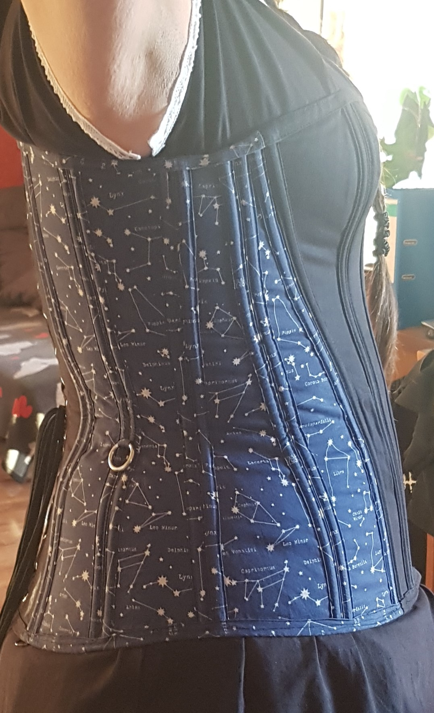
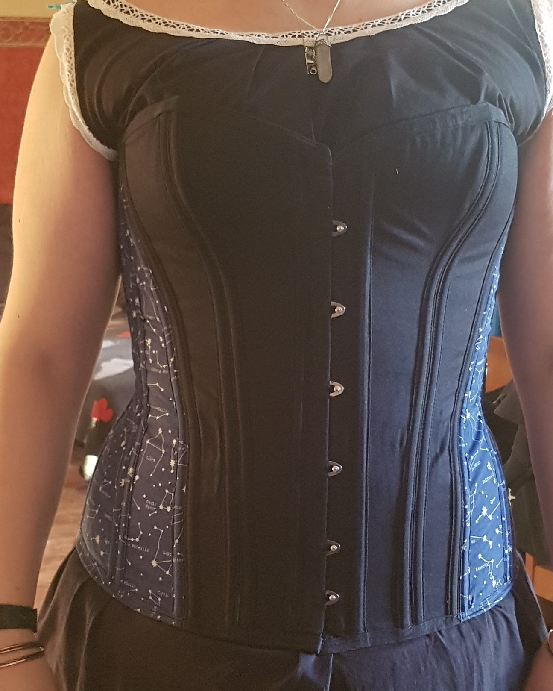
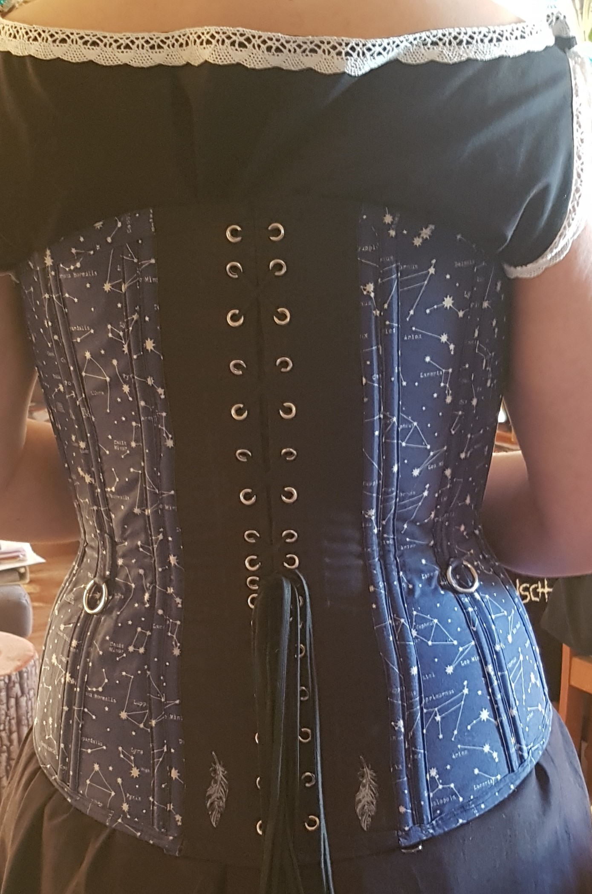
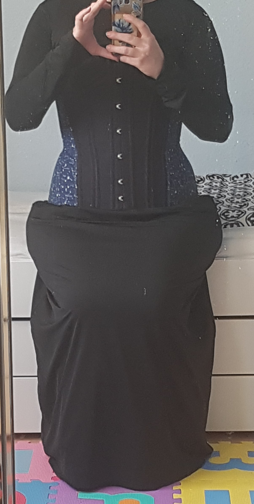
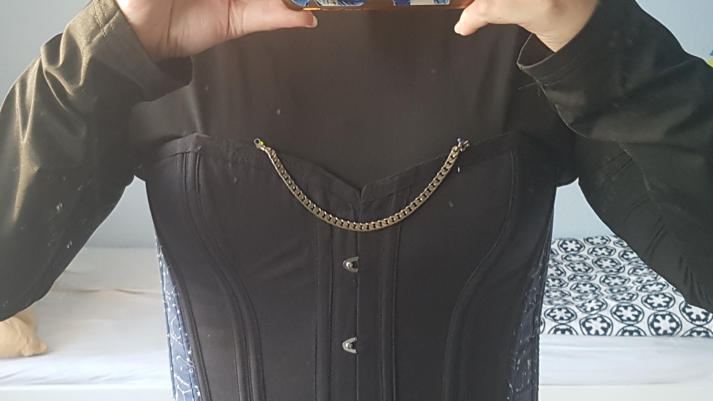

Kontellations-Korsett
Warnung vor dreckigem Spiegel und dem Hintergrund in den Bildern.

Das erste Korsett, das ich mir selber geschneidert habe. Man sieht definitiv ein bisschen die Dellen (Hüfte links) aber für den
ersten Versuch mehr als akzeptabel. Seitenansicht rechts mit gehobenem Arm.

Frontansicht des Korsetts. Da habe ich noch unsauber genäht, da ich mit dem Korsett auch erst einmal mein Nähwissen erneuern musste,
was immerhin schon knapp 20 Jahre her war.

Rückenansicht mit der Schnürung. Das Korsett war extra mit wenig Einschnürung, da ich erst einmal Rückensupport haben wollte. Inzwischen
ist es mir auch zu klein, daher gibt es hoffentlich in absehbarer Zeit ein neues.

Das Korsett mit einem Kleid darunter. leider sieht man, wie das Korsett den Beinspeck bei mir weiter herausdrückt als gut aussieht. Mit dem
entsprechenden Rock würde dies weniger auffallen. Da das Kleid ein stretch-Stoff und nicht für diesen Zweck gemacht ist, fällt
dies entsprechend auf.

Vorbereitung für die Taschenuhr-tasche und Kette.

Taschenuhr Vorbereitung, größerer Ausschnitt.

Detail der Taschenuhr-tasche.

So sieht das Korsett aus, wenn es flach dran liegt.

Detailansicht des Verschlusses.

Andere Seite des Verschlusses mit einer kleinen Polsterung, damit die Haut nicht durch den Spalt drücken kann.

Deshalb sollte man sich Mühe geben und Korsetts mit der Sandwich Technik auch richtig anpassen. Die Stelle drückt ein wenig,
da ich das nicht gemacht habe.

Hier sieht man deutlich, dass ich noch nicht gut nähen konnte und die Maschine damals dringend gewartet werden musste (ist sie inzwischen).

Man muss sehr genau nähen, sich zeit nehmen usw. ansonsten bekommt man so krumme Stäbchentunnel wie ich...